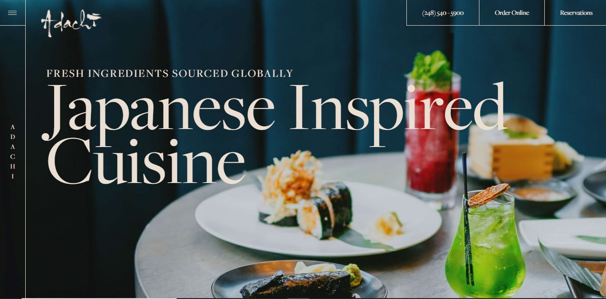
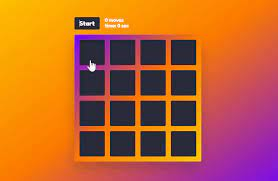

| Eat Code Sleep Repeat
| Eat Code Sleep Repeat
Music Website
Music websites act as an online resume for most professional musicians and bands - but it has the potential to be so much more. It's a central hub where audiences from all over the world can listen to your music, learn about upcoming performances and get to know the personality behind your work.With a music website you both create and control the content. Everything about you is in one place. This makes it easy for someone to help promote your music and understand who you are as a musician. You can create branding with a website design - it'll set you apart and showcase your vibe.
Music websites act as an online resume for most professional musicians and bands - but it has the potential to be so much more. It's a central hub where audiences from all over the world can listen to your music, learn about upcoming performances and get to know the personality behind your work.With a music website you both create and control the content. Everything about you is in one place. This makes it easy for someone to help promote your music and understand who you are as a musician. You can create branding with a website design - it'll set you apart and showcase your vibe.

Restaurant Website
A restaurant website is a business website that aims to provide information on their menu, service, location, and other services. It also provides directions to the restaurant. It may also offer promotional discounts and special offers from the restaurants along with recipes created by chefs. The goal of a restaurant website is to help consumers find an establishment that best fits their needs. Aside from their delicious food, both restaurant websites feature a modernized design that is clean and easy to navigate. Not only do they look nice but they also provide visitors with a sleek interface.
A restaurant website is a business website that aims to provide information on their menu, service, location, and other services. It also provides directions to the restaurant. It may also offer promotional discounts and special offers from the restaurants along with recipes created by chefs. The goal of a restaurant website is to help consumers find an establishment that best fits their needs. Aside from their delicious food, both restaurant websites feature a modernized design that is clean and easy to navigate. Not only do they look nice but they also provide visitors with a sleek interface.

Card Memory Game
The memory game is a common children's game played with a set of cards. The cards have a pictures on one side and each picture appears on two cards. The game starts with all the cards face down and players take turns to turn over two cards. If the two cards have the same picture, then they keep the cards, otherwise they turn the cards face down again. The winner is the person with the most cards when all the cards have been taken.We have several different versions of the game (the difference being the pictures), and I have played with many, many times. When playing with a two year old, it sometimes feels like they are just turning cards over at random.
The memory game is a common children's game played with a set of cards. The cards have a pictures on one side and each picture appears on two cards. The game starts with all the cards face down and players take turns to turn over two cards. If the two cards have the same picture, then they keep the cards, otherwise they turn the cards face down again. The winner is the person with the most cards when all the cards have been taken.We have several different versions of the game (the difference being the pictures), and I have played with many, many times. When playing with a two year old, it sometimes feels like they are just turning cards over at random.